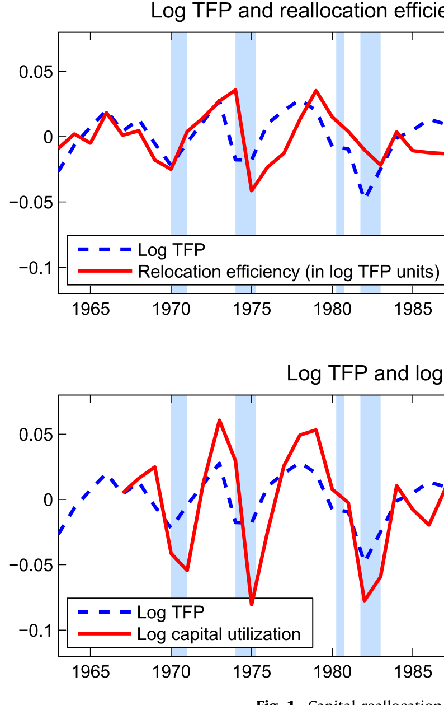
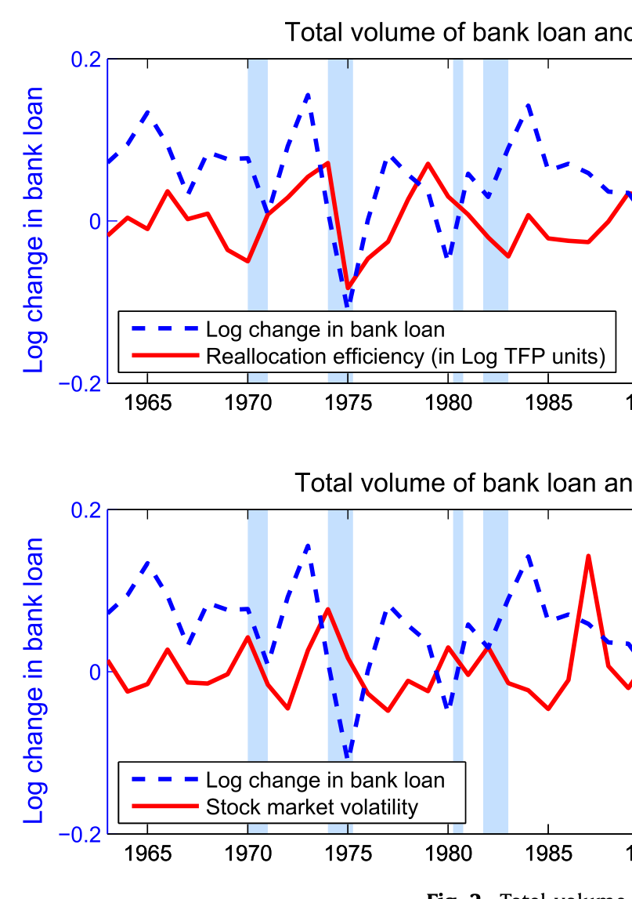
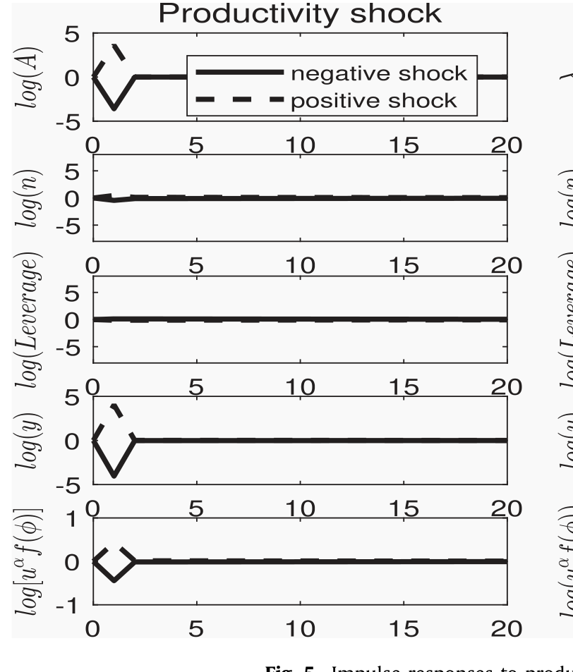
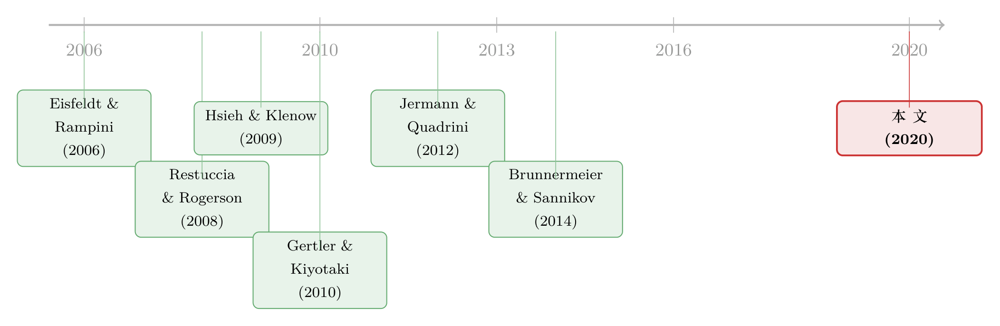

钱配错了地方，就成了「全要素生产率」的缺口
本文读的是 Ai, Li & Yang (2020, Journal of Financial Economics)：他们搭了一个带金融中介的一般均衡模型，让中介部门的代理摩擦（agency friction）去左右「存量资本在企业间重新配置」的效率——结果，一个原本只藏在金融部门的冲击，会以「全要素生产率（TFP）下降」的面孔出现在宏观数据里，并内生地造出了逆周期的波动率和逆周期的资本边际产出离散度。在金融冲击版本里，银行家贴现率的标准差只要 2.3%，模型就能复制出 3% 的总产出波动。
1 一个老问题，和一个被忽略的杠杆
大衰退之后，所有人都在问同一件事：金融部门里发生的事情，是怎么一步步传导到实体经济、最后变成 GDP 上那道深坑的？
教科书给的标准答案是「金融摩擦影响投资」。银行受了伤，企业借不到钱，于是少买了机器，产出就下来了。这个故事听上去顺理成章，但它有一个让宏观经济学家长期头疼的硬伤：投资在整个资本存量里只是很小的一块。在标准的真实经济周期（real business cycle, RBC）模型里，每年的投资大约只占资本存量的 10%，而资本对总产出的贡献又只有约三分之一。把这两个数乘起来，Kocherlakota（2000）早就指出，投资这条渠道能撬动的产出波动顶天也就 3.3% 左右——金融摩擦再怎么放大，也很难单凭「少买了机器」掀起一场大衰退。
于是，一个自然的问题是：如果新增投资这块「流量」太小撬不动经济，那有没有一块更大的「存量」可以被摩擦撬动？
有的。它就是资本再配置（capital reallocation）。整个经济里已经存在的那一大堆资本，并不是均匀地趴在每家企业里的：高生产率的企业应该多用资本，低生产率的应该少用。把资本从低效企业挪到高效企业，就是再配置。资本错配（capital misallocation）这条文献给出的数字相当惊人——Restuccia 和 Rogerson（2008）、Hsieh 和 Klenow（2009）都发现，仅仅通过改善错配，TFP 的效率增益就能达到 30%–50%。这是一个比「投资渠道」大了一个数量级的杠杆。
本文真正的雄心，就是把金融中介这只手，按在这个大杠杆上。
一句话概括这篇文章的转换：别人盯着金融摩擦如何压低投资（资本的流量），本文盯着金融摩擦如何恶化再配置（资本存量的分布）。前者天花板很低，后者天花板很高——这就是为什么本文能让金融摩擦「值钱」起来。
2 先看数据：三组被串起来的事实
在动模型之前，作者先摆出几组事实，把「资本再配置效率—银行信贷—宏观波动」这条链子的每一环钉给你看。
衡量再配置效率的办法很直接：仿照 Hsieh 和 Klenow（2009），在四位数行业内部，算资本边际产出（marginal product of capital, MPK）对数值的横截面方差。如果资本配得完美，所有企业的 MPK 应该相等，方差为零；方差越大，错配越严重。把这个方差取负，就是「再配置效率」。
第一组事实：再配置效率与实测 TFP 高度同步。两条 HP 滤波后的时间序列几乎贴在一起，相关系数 0.33（t = 2.90）。这意味着，我们在宏观数据里看到的 TFP 起伏，很可能有相当一部分根本不是技术真的变好变坏，而是资本配得好不好。资本利用率（capital utilization）与 TFP 的相关性更高，达到 0.62（t = 6.49）——衰退里，机器并不是消失了，而是被闲置了。

Figure 1: Capital reallocation
第二组事实，也是把金融部门拉进来的关键一环：银行贷款总量是顺周期的，且与再配置效率正相关、与波动率负相关。作者从资金流量表（Flow of Funds）算出非金融企业部门的银行贷款总量，它与再配置效率的相关系数是 0.43（t = 3.18），而与股市波动率的相关系数是 −0.33（t = −2.51）。换句话说，信贷扩张的时候，资本流向更顺畅、波动更低；信贷收缩的时候，错配加剧、波动抬头。

Figure 2: Total volume
接着是第三到第六组：资本再配置的「数量」顺周期、MPK 的横截面离散度逆周期、宏观数量（消费、投资、产出）的波动率逆周期、股市波动率与个股特质波动率也都逆周期。这些是宏观和资产定价文献里的老熟人了（Bloom, 2009；Bansal et al., 2014），作者不再细说，只是把它们摆在一起——因为接下来那个模型，要在不靠任何外生的波动率冲击的前提下，把这一整排逆周期波动统统内生地长出来。
这是本文最漂亮的承诺：原始冲击是同方差（homoskedastic）的，波动率的逆周期性是均衡的内生产物。
3 模型：把「再配置」写成一个可解的一般均衡
这是一篇模型论文，核心机制全在结构里，所以值得把骨架一块块搭清楚。
3.1 实体部门：异质企业与「岛屿」
最终产品由一个代表性厂商用一连串中间品组装而成，采用 Dixit-Stiglitz 式的 CES 技术：
$$ Y = \left( \int_{[0,1]} Y_j^{\frac{\eta-1}{\eta}}\, dj \right)^{\frac{\eta}{\eta-1}} $$
其中 \(\eta\) 是各中间品之间的替代弹性。这个常数规模报酬的结构有个妙处：它让我们能干净地量化「再配置」的收益——替代弹性恰好刻画了在不同品种间腾挪资本能带来多大好处。
每一种中间品 \(j\) 在一座单独的「岛屿」上生产，用资本 \(K_{j,t}\) 和劳动 \(L_{j,t}\)：
$$ Y_{j,t} = \bar{A}_t\, z_{j,t}\, K_{j,t}^{\alpha} L_{j,t}^{1-\alpha} $$
关键在那个 \(z_{j,t}\)：它是岛屿特定的特质生产率冲击，服从一个随机游走式的过程
$$ \ln z_{j,t+1} = \ln z_{j,t} + \varepsilon_{j,t+1} $$
\(\varepsilon_{j,t+1}\) 在企业间、时间上都是独立同分布的，且做了归一化 \(\mathbb{E}\!\left[e^{\varepsilon_{j,t+1}}\right]=1\)——这保证全体企业的平均特质生产率不随时间漂移，于是总量层面的生产率增长全部来自 \(\bar{A}_t\)。作者进一步令 \(\bar{A}_t = A_t K_t^{1-\alpha}\)（这是 Frankel, 1962 与 Romer, 1986 的外部性设定），使得在总量层面生产对 \(K_t\) 是线性的，大大压缩了状态变量的维度。
正是这个 \(z_{j,t}\) 的异质性，制造了「再配置的必要性」：高 \(z\) 的岛屿应该多分到资本，但要做到这一点，它就必须向经济的其余部分借钱——而借钱，就要经过金融中介这道关。
3.2 资本利用率：衰退里被闲置的机器
为了让模型对得上「资本利用率顺周期」这个事实，作者引入了 Greenwood et al.（1988）式的可变资本利用。当期资本 \(K_t\) 既能投入生产，也能「存起来」。资本的运动方程是：
这里 \(g(\cdot)\) 是凹的存储技术（\(g(0)=0,\ g'>1-\delta,\ g''<0\)）。直觉是：利用得越狠，折旧越快；闲置的资本折旧反而慢。于是在坏年景里，企业可以少用资本而非扔掉资本——这让模型既能解释衰退里投资齐刷刷下滑，又能复制资本利用率的顺周期。这一笔看似技术性的设定其实很要紧：没有它，当高生产率企业被约束时，资本就只能反过来流向低生产率企业，这与数据相悖。
3.3 金融中介：有限执行下的借贷约束
每座岛屿上有一个竞争性的金融中介（作者把「中介」和「银行」混用）。一家位于岛屿 \(j\)、期初净值为 \(N_{j,t}\) 的银行，要决定向家庭借多少 \(B_{j,t}\)、以及为下一期持有多少资本 \(K_{j,t+1}\)。由于没有资本调整成本、资本价格为一，银行的预算约束极简：
$$ K_{j,t+1} = N_{j,t} + B_{j,t} $$
故事的张力全在借贷合约的有限执行（limited enforcement）上：银行家有可能赖账、把资产卷走一部分。为了让借款人不违约，银行作为持续经营的「特许权价值」必须不低于它违约能拿走的好处——这就给银行的借款能力 \(B_{j,t}\) 套上了一个激励相容约束（incentive compatibility constraint）。这个约束是本文一切动态的发动机：
- 在时间序列上，对中介净值的负向冲击削弱其借款能力，新资本的形成随之放缓；
- 在横截面上，为高生产率企业融资的银行受伤更重——因为它们本就要借得更多、违约诱惑也更大。于是负向冲击恰恰打在最该扩张的那批银行身上，把存量资本的再配置效率直接拉低。
家庭这边是对数效用，持有无风险债券与银行股权，其随机贴现因子（stochastic discount factor）就是 \(M_{t+1} = \beta\, C_t / C_{t+1}\)，定价方程为标准的欧拉条件 \(\mathbb{E}_t[M_{t+1} R_{f,t+1}] = 1\)。
3.4 解法：为什么非要全局解
到这里，模型机制其实并不算稀奇——它建在 Gertler 和 Kiyotaki（2010）的框架上。本文方法论上的真正贡献，是那套递归政策函数迭代（recursive policy function iteration）的全局解法。
为什么非要全局解？因为大多数带金融摩擦的模型用的是局部近似（local approximation），而局部近似有个致命短板：它抓不住波动率随时间的变化，也抓不住「约束偶尔才绑定（occasionally binding）」这件事。可金融危机最标志性的特征，恰恰就是波动率在危机里骤然抬升、价格与数量的横截面离散度突然张开。要刻画激励相容约束「时紧时松、因企业而异」的全部动态，就必须把方程在偏离稳态（off-steady-state）的整个状态空间上解出来——这正是递归政策函数迭代干的活，也是本文能讨论「危机行为」的底气所在。
4 主要结果：两种冲击，两种世界
作者校准了模型的两个版本，把原始冲击的波动率都校准到匹配美国产出波动，然后看金融摩擦到底贡献了多少。
版本一：TFP 冲击。 在这个世界里，金融摩擦的放大效应只占总产出波动的约 10%，而且相当短暂。原因是个老难题：RBC 模型很难造出大的资产价格波动；生产率冲击撬不动资产价格、也撬不动中介净值，于是从金融摩擦那里能借到的放大力度很有限。
版本二：金融冲击。 受「TFP 冲击撑不起资产价格波动」这一短板的启发，再结合资产定价文献「资产价格的相当部分来自贴现率冲击」的发现，作者把金融冲击建模为银行家贴现率的外生波动。这一下世界变了样，多出两个崭新的特征：持续性与非对称性。
- 一次对银行净值的暂时性冲击，会压低其借款能力、拉低下一期的再配置效率；错配压低产出，又触发银行净值的下一轮下跌——这个效应在时间上层层传导，对未来经济有长尾巴的影响。
- 负向冲击收紧约束、让经济对未来更脆弱；正向冲击放松约束、影响却小得多。在极端情形下，一连串负向冲击会把银行部门的净值抽干，把所有银行的借款能力压到次优水平，于是经济跌进一场金融危机：宏观波动飙升、产出与资产价格大幅而持久地下跌、利差骤然张开。

Figure 5: Impulse responses to
最让人服气的是量级。在基准校准里，银行家贴现率的标准差只有约 2.3%（年化）——这远小于资产定价文献里常见的贴现率波动（Campbell & Shiller, 1988；Lettau & Ludvigson, 2014）。可就是这么小的一个扰动，模型从资本再配置渠道生产出了 3% 的总产出波动，并且内生地长出了：总产出与消费的逆周期波动、企业产出与股票收益横截面的逆周期离散度、以及再配置效率与资本利用率的逆周期——全都对得上数据，而原始冲击是同方差的。
换句话说，本文兑现了第 2 节那个承诺：你不需要外生地往模型里塞一个「波动率冲击」，逆周期波动会从「约束时紧时松」这件事里自己冒出来。
5 文献脉络
把这篇文章放回它生长的那片土壤里，能看得更清楚。
它脚踏两条河。第一条是资本再配置与错配这条实体侧的脉络：Eisfeldt 和 Rampini（2006）最早用实证讲清了「再配置的数量顺周期、再配置的收益逆周期」，并给了一个把再配置成本与 TFP 冲击挂钩的模型；随后 Restuccia 和 Rogerson（2008）、Hsieh 和 Klenow（2009）把「错配能解释多大 TFP 缺口」量到了 30%–50% 的惊人水平。（关于「错配」这一主题在现代实证里的延伸，可参见《投资于「错配」：那些看起来在乱花钱的公司，其实在赌一次跳跃》与《市场太「集中」，资本就会配错地方》。）
第二条是带金融中介部门的宏观模型：Gertler 和 Kiyotaki（2010）、Brunnermeier 和 Sannikov（2014）、He 和 Krishnamurthy（2019）把中介净值放到了周期的中心；Jermann 和 Quadrini（2012）则让冲击直接发源于金融部门。本文站在 Gertler-Kiyotaki 的肩上，但把镜头从「投资」转向「存量资本的再配置」，并用全局解法去捕捉那些局部近似看不见的危机动态。

本文的位置，正是这两条河的交汇处：它让中介部门的代理摩擦，去左右异质企业之间存量资本的再配置效率，从而把金融冲击翻译成 TFP 的语言。（关于「衰退里资源如何被重新洗牌」的另一条信贷视角，可参见《为什么衰退总在悄悄改写一国的产业版图？》。）
6 评论与延伸（Q&A + 研究方向）
(a) 几个可能的疑问
Q：把「再配置效率」等同于 MPK 的横截面方差，这一步靠谱吗？
这是 Hsieh-Klenow 的标准做法，逻辑上站得住：配置完美时所有企业 MPK 相等、方差为零，方差越大错配越重。但它把所有让 MPK 离散的东西——调整成本、加成（markup）异质、测量误差——都算成了「错配」。本文在四位数行业内部计算，部分缓解了技术差异的干扰，但这个测度本身的解释边界，仍是整条文献的共同软肋。
Q：为什么 TFP 冲击版本只放大 10%，金融冲击版本却能撑起全部波动？差别到底在哪？
差在能不能撬动资产价格与中介净值。TFP 冲击撬不动资产价格，中介净值就不怎么动，激励相容约束的松紧也就不怎么变，放大自然有限。而把冲击直接放到银行家贴现率上，等于直接摇晃了中介净值这根杠杆，约束的松紧被放大、再配置效率随之剧烈起伏——这才是金融摩擦「值钱」的来源。
Q：「逆周期波动率是内生的」这个卖点，新意在哪？
很多模型是把逆周期波动外生地塞进去的（直接假设一个随机波动率过程）。本文的原始冲击是同方差的，逆周期波动率纯粹来自「约束偶尔绑定」这一非线性——坏年景里约束更容易绑定、绑定得更紧，于是同样大小的冲击造成的后果更剧烈。这是机制上的贡献，不是参数上的。
Q：把金融冲击设成「银行家贴现率波动」，是不是有点像往黑箱里塞了个想要的答案？
这是个诚实的隐忧。贴现率冲击在资产定价里确实常被当作「我们还没完全理解的那部分」的代名词。作者的辩护有两点：一是这个冲击的校准量级（
2.3%）远小于资产定价文献里的贴现率波动，并不夸张；二是模型的价值不在「冲击叫什么名字」，而在于它如何被中介部门放大、并以 TFP 的面孔传导到实体经济。但「这个冲击的微观基础是什么」，确实是留给后人的题。
Q：为什么一定要异质企业？用代表性企业不行吗？
不行，且作者给了两条理由。其一是数据事实：美国企业部门作为整体几乎总在净分红、很少受融资约束（Chari, 2012），代理摩擦模型里「受约束就不分红」的预言对不上总量。要解释「为什么有些企业在衰退里受约束、有些却没有」，就必须让企业异质。其二更要命：只有异质企业才会产生「再配置」，而再配置正是本文让金融摩擦撬动大波动的那根杠杆。
Q：模型说危机有「非对称性」，这和线性模型的根本区别是什么？
线性（局部近似）模型里，正负冲击是镜像的，且约束要么永远绑定要么永远不绑定。本文用全局解，约束是「偶尔绑定」的：在净值充裕时它松弛、冲击影响小，在净值枯竭时它绑定、冲击被剧烈放大。于是负向冲击的破坏力远大于正向冲击的修复力——这种非对称，局部近似在原理上就看不见。
(b) 几个可能的研究问题与提案
1. 把「再配置渠道」搬到公司债市场。 【经济故事】本文的中介是笼统的「银行」。但在美国，大企业的边际融资越来越多来自公司债而非银行贷款。如果把中介换成债券市场的做市商与持有人，那么「做市商资产负债表受冲击 → 债券流动性恶化 → 高生产率企业再融资受阻 → 存量资本再配置变差」会是一条平行的链子。 【可行性】中。流动性侧的实证抓手很成熟（TRACE 的价格冲击、Amihud），难点在于把「债券流动性」干净地映射到企业层面的 MPK 离散度上，需要把发债企业的资本配置与债券市场状态对齐。
2. 用外资持有人的撤离当作中介净值冲击的工具变量。 【经济故事】本文的「金融冲击」缺一个干净的外生来源。外资机构（尤其外资银行与债券基金）的母国冲击，对美国本地的资本配置基本是外生的——母国一旦去杠杆，它们被迫抛售美国资产，等于给本地中介净值打了一记外生的负向冲击。 【可行性】中。识别策略可借鉴已有的「母国冲击 → 在美抛售」设计，数据上需要把外资持有份额匹配到行业／企业，再看 MPK 离散度是否随之张开。诚实地说，把它一路推到「再配置效率」这个总量测度上有难度，但推到企业投资与利差是 doable 的。
3. 直接检验「逆周期 MPK 离散度」的金融驱动来源。 【经济故事】本文预言：MPK 横截面离散度的逆周期性，应当主要由中介部门状态驱动，而非技术冲击。这是一个可被证伪的横截面预言。 【可行性】高。用 Compustat 在四位数行业内构造 MPK 离散度的时间序列，再回归到中介资本比率（He-Krishnamurthy 因子）或银行信贷状况上，看离散度的逆周期是否随金融状况而非 TFP 起伏。数据与方法都是现成的。
4. 资本利用率作为「隐藏的再配置」。 【经济故事】本文把资本利用率与再配置并列为同一枚硬币的两面（闲置＝一种极端的错配）。一个自然延伸是：在企业层面，受金融约束更紧的企业，是不是在衰退里把资本利用率压得更低？ 【可行性】中。利用率的企业层面测度较稀缺（多为行业级的 Fed 数据），需要用电力消耗、产能利用调查或会计代理变量近似，识别上要小心约束与利用率之间的反向因果。
7 我的判断
这篇文章的贡献是「转换视角」式的，而非「增加一个摩擦」式的。它最聪明的一步，是把金融摩擦从「压低投资流量」这个低天花板的渠道，挪到「恶化存量再配置」这个高天花板的渠道上——这一挪，让金融摩擦第一次有底气去解释大波动。方法论上，递归政策函数迭代的全局解，配上「约束偶尔绑定」带来的内生逆周期波动，是干净而有说服力的。
对识别（其实是对「可信度」）我有两点保留。其一，整套放大机制的强弱，几乎全押在「金融冲击 = 银行家贴现率波动」这个黑箱上；它的校准虽不夸张，但缺一个微观基础来说清这 2.3% 究竟从何而来——换个冲击设定，结论的量级未必稳健。其二，「再配置效率 = MPK 离散度」这个测度承载了太多解释，它对得上 TFP 的那 0.33 相关性固然漂亮，但相关不等于「金融驱动」，本文的均衡机制是被假设进去的，而非从数据里识别出来的。
接下来我最想看到的，是有人把这套机制的横截面预言单独拎出来做实证检验：在金融状况收紧时，到底是哪一类企业的 MPK 被推得更偏离？如果答案真的是「本该扩张的高生产率企业被中介约束卡住了」，那这篇模型就不只是自洽，而是被现实背了书。
参考文献
- Ai, H., Li, K., & Yang, F. (2020). Financial intermediation and capital reallocation. Journal of Financial Economics 138(3), 663–686.
- Bansal, R., Kiku, D., Shaliastovich, I., & Yaron, A. (2014). Volatility, the macroeconomy, and asset prices. Journal of Finance 69, 2471–2511.
- Bloom, N. (2009). The impact of uncertainty shocks. Econometrica 77(3), 623–685.
- Brunnermeier, M. K., & Sannikov, Y. (2014). A macroeconomic model with a financial sector. American Economic Review 104(2), 379–421.
- Campbell, J., & Shiller, R. (1988). The dividend-price ratio and expectations of future dividends and discount factors. Review of Financial Studies 1, 195–228.
- Chari, V. V. (2012). A macroeconomist's wish list of financial data. In Risk Topography: Systemic Risk and Macro Modeling. University of Chicago Press, 215–232.
- Eisfeldt, A. L., & Rampini, A. A. (2006). Capital reallocation and liquidity. Journal of Monetary Economics 53, 369–399.
- Frankel, M. (1962). The production function in allocation and growth: a synthesis. American Economic Review 52(5), 996–1022.
- Gertler, M., & Kiyotaki, N. (2010). Financial intermediation and credit policy in business cycle analysis. In Handbook of Monetary Economics 3, 547–599.
- Greenwood, J., Hercowitz, Z., & Huffman, G. W. (1988). Investment, capacity utilization, and the real business cycle. American Economic Review, 402–417.
- He, Z., & Krishnamurthy, A. (2019). A macroeconomic framework for quantifying systemic risk. American Economic Journal: Macroeconomics 11(4), 1–37.
- Hsieh, C.-T., & Klenow, P. J. (2009). Misallocation and manufacturing TFP in China and India. Quarterly Journal of Economics 124(4), 1403–1448.
- Jermann, U., & Quadrini, V. (2012). Macroeconomic effects of financial shocks. American Economic Review 102(1), 238–271.
- Kocherlakota, N. R. (2000). Creating business cycles through credit constraints. Federal Reserve Bank of Minneapolis Quarterly Review 24(3), 2–10.
- Lettau, M., & Ludvigson, S. C. (2014). Shocks and crashes. NBER Macroeconomics Annual 28(1), 293–354.
- Restuccia, D., & Rogerson, R. (2008). Policy distortions and aggregate productivity with heterogeneous establishments. Review of Economic Dynamics 11, 707–720.
- Romer, P. M. (1986). Increasing returns and long-run growth. Journal of Political Economy 94(5), 1002–1037.